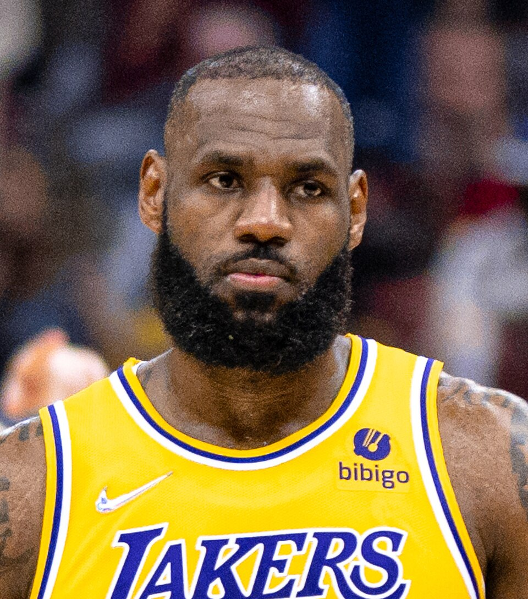
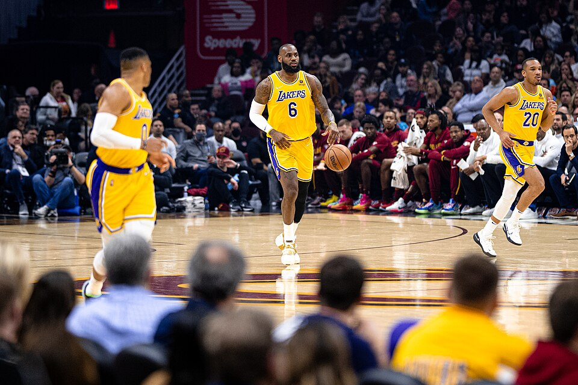

LeBron Throws Alley Oop to His Son in Historic Moment
LeBron and Bronny connected for an alley oop, making history as the first father-son duo to play together in the NBA.

In a dominant performance, James led his team to a big series lead, hitting a buzzer beater to head into OT.
LeBron and Bronny connected for an alley oop, making history as the first father-son duo to play together in the NBA.

Sources close to the King say a return to Cleveland is on the table, and fans in Ohio are already celebrating.
In a landmark cover story, Sports Illustrated declared LeBron James the greatest athlete across all sports in the history of American competition.
LeBron's I Promise School network reached a major milestone this week, opening its 100th location and providing free education to thousands of at-risk students.
Citing his dedication to his family and his public role as a positive father figure, LeBron James was awarded Father of the Year for a record third time in a row.